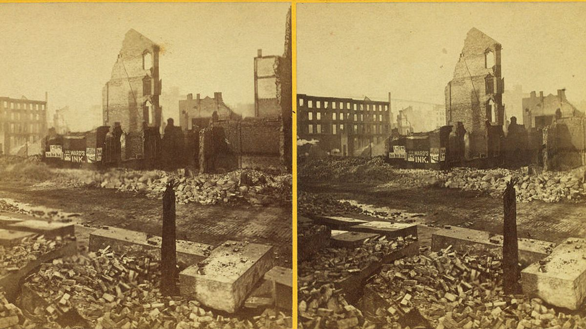
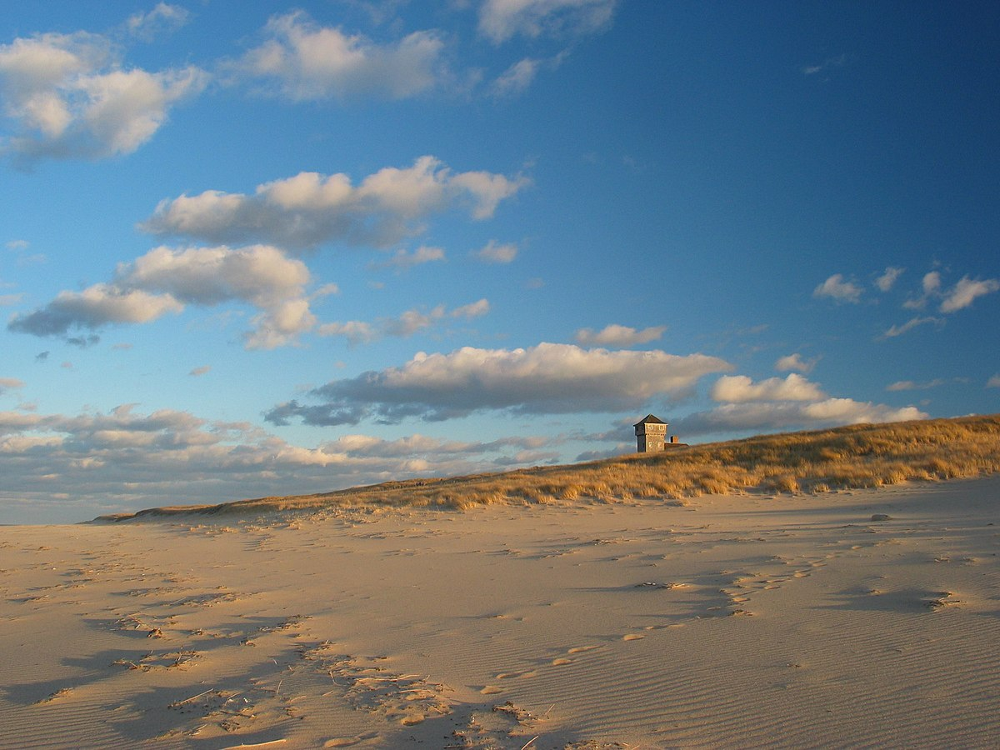

Sejarah

Kota Boston, yang terletak di negara bagian Massachusetts, Amerika Serikat, memiliki sejarah yang kaya.
Boston adalah salah satu kota tertua di Amerika Serikat dan memainkan peran penting dalam Revolusi Amerika.
Peristiwa terkenal seperti Boston Tea Party dan Pertempuran Bunker Hill terjadi di sini. Selain itu, Boston
juga dikenal sebagai pusat budaya, pendidikan, dan inovasi.
Filosofi kota Boston tercermin dalam sejarah, budaya, dan inovasi yang menjadi ciri khasnya.
Sebagai salah satu kota tertua di Amerika Serikat, Boston memiliki peran penting dalam sejarah
politik dan budaya bangsa. Filosofi Boston mencakup nilai-nilai kebebasan, inovasi, dan semangat
revolusioner yang tercermin dalam sejarahnya. Selain itu, Boston juga dikenal sebagai pusat pendidikan dan inovasi,
dengan institusi pendidikan terkemuka seperti Harvard University dan Massachusetts Institute of Technology (MIT).
Filosofi Boston juga mencakup nilai-nilai pluralisme dan keragaman budaya, yang tercermin dalam kehidupan
malam yang kaya dan beragam. Dengan demikian, filosofi Boston mencakup nilai-nilai kebebasan, inovasi,
semangat revolusioner, pluralisme, dan keragaman budaya yang menjadi ciri khas dan identitas unik dari kota ini.
Geografis

Secara geografis, Boston terletak di pantai timur Amerika Serikat. Kota ini memiliki pelabuhan alami yang
penting secara historis dan terletak di sepanjang Sungai Charles. Boston juga dikelilingi oleh berbagai perairan,
termasuk Teluk Massachusetts.
Boston terletak di pantai timur Amerika Serikat, di negara bagian Massachusetts.
Kota ini memiliki luas sekitar 89,63 mil persegi (232,1 km2) dan terdiri dari daratan dan perairan.
Boston dikelilingi oleh Teluk Massachusetts dan Sungai Charles mengalir melaluinya.
Wilayah metropolitan Boston juga mencakup berbagai kota dan daerah di sekitarnya, yang membentuk pusat
perkotaan yang padat dan beragam.
Selain itu, Boston memiliki topografi yang bervariasi, dengan daerah pesisir, perbukitan, dan dataran rendah.
Kota ini juga terkenal dengan taman-taman dan ruang terbuka hijau, seperti Boston Common dan Boston Public Garden.
Wisata
Boston menawarkan beragam objek wisata, termasuk situs sejarah, museum, taman, dan kehidupan malam yang kaya.
Beberapa destinasi wisata terkenal di Boston antara lain Freedom Trail, Museum of Fine Arts, Fenway Park.
Selain itu, Boston juga dikenal dengan institusi pendidikan terkemuka seperti
Harvard University dan Massachusetts Institute of Technology (MIT).
Dengan sejarahnya yang kaya, letak geografis yang strategis, dan beragam destinasi wisatanya, Boston menawarkan
pengalaman wisata yang unik dan beragam bagi
Freedom Trail

Freedom Trail adalah objek wisata yang terkenal di Boston, Amerika Serikat.
Jalur jalan kaki ini menghubungkan 16 situs bersejarah yang memiliki nilai nasional, termasuk taman,
gereja, rumah, monumen, dan kapal perang. Jalur ini membawa pengunjung melalui perjalanan sejarah Amerika,
termasuk situs-situs terkenal seperti Boston Common, Massachusetts State House, Park Street Church,
Old State House, dan Bunker Hill Monument. Freedom Trail menawarkan pengalaman wisata sejarah yang kaya dan
mendalam bagi pengunjung yang tertarik akan sejarah Amerika dan Revolusi Amerika.
Museum of Fine Arts

Museum of Fine Arts (MFA) adalah salah satu museum terbesar di Amerika Serikat yang menarik lebih dari
satu juta pengunjung setiap tahun. Museum ini menampilkan berbagai jenis seni, termasuk seni lokal,
asli, dan internasional, yang mencakup periode sejarah seni dari zaman kuno hingga akhir abad ke-18
Fenway Park

Fenway Park adalah stadion bisbol yang terletak di Boston, Massachusetts, Amerika Serikat.
Stadion ini telah menjadi markas bagi tim bisbol Liga Amerika Boston Red Sox sejak tahun 1912 dan
merupakan satu-satunya waralaba Major League Baseball sejak tahun 1953. Fenway Park adalah stadion
bisbol tertua di MLB dan telah melangsungkan 11 acara World Series di mana Red Sox memenangi enam di antaranya.
Selain perlawanan bisbol, stadion ini juga menganjurkan pelbagai acara sukan dan budaya termasuk aksi
bola sepak Amerika bagi Boston Yanks dan Boston Patriots, konsert, bola sepak dan hoki serta kempen politik
dan keagamaan. Fenway Park dianggap sebagai salah satu venue sukan di dunia yang tersohor dan menjadi simbol Boston.